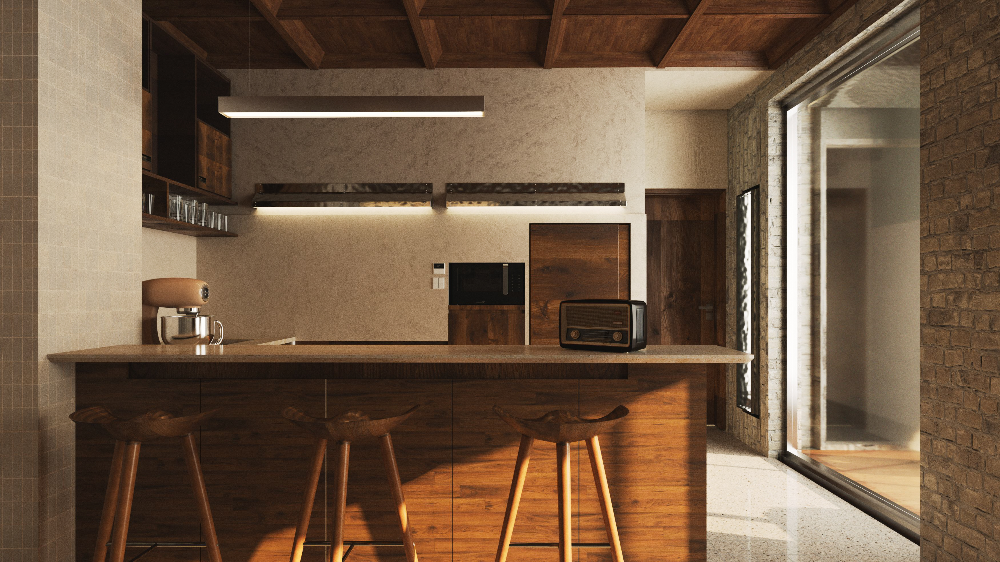
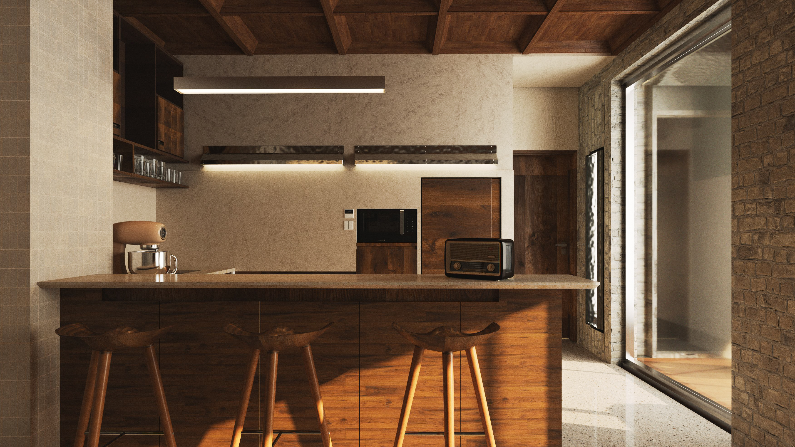

In differential geometry, the Grassmann
product, represented by a wedge, constructs
higher-dimensional objects by adding existing
dimensions.
At WEDGE, we embrace this concept
as our guiding philosophy, pioneering a new era in
interior design by introducing new technology into
our design and production process.
 
